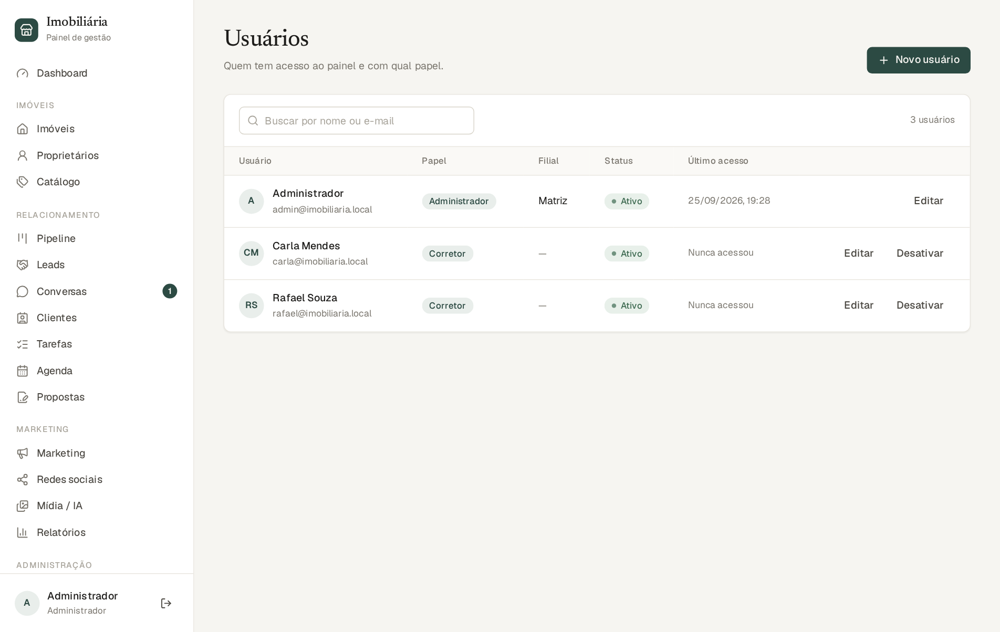
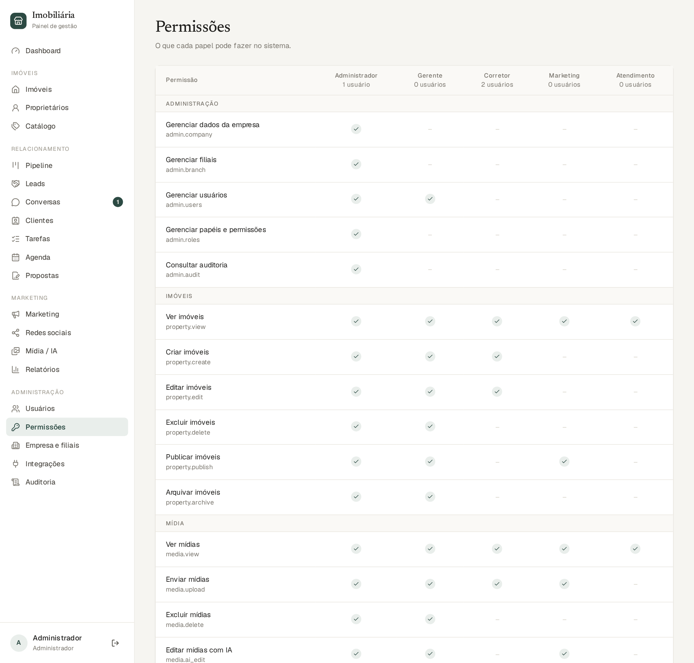
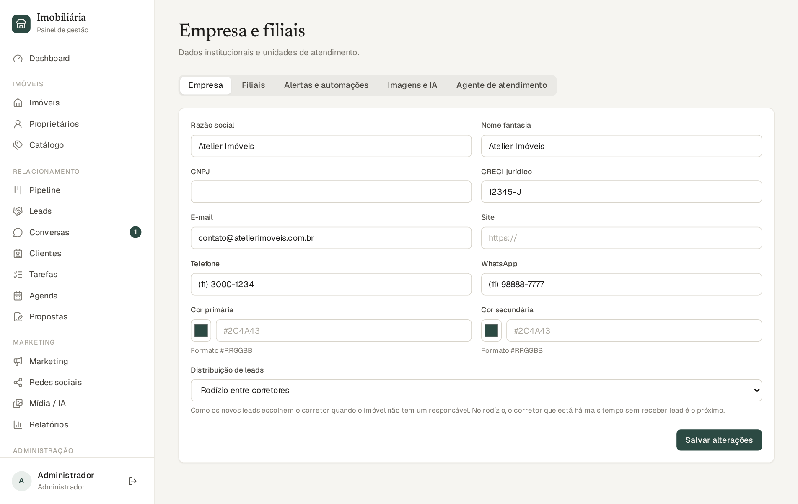
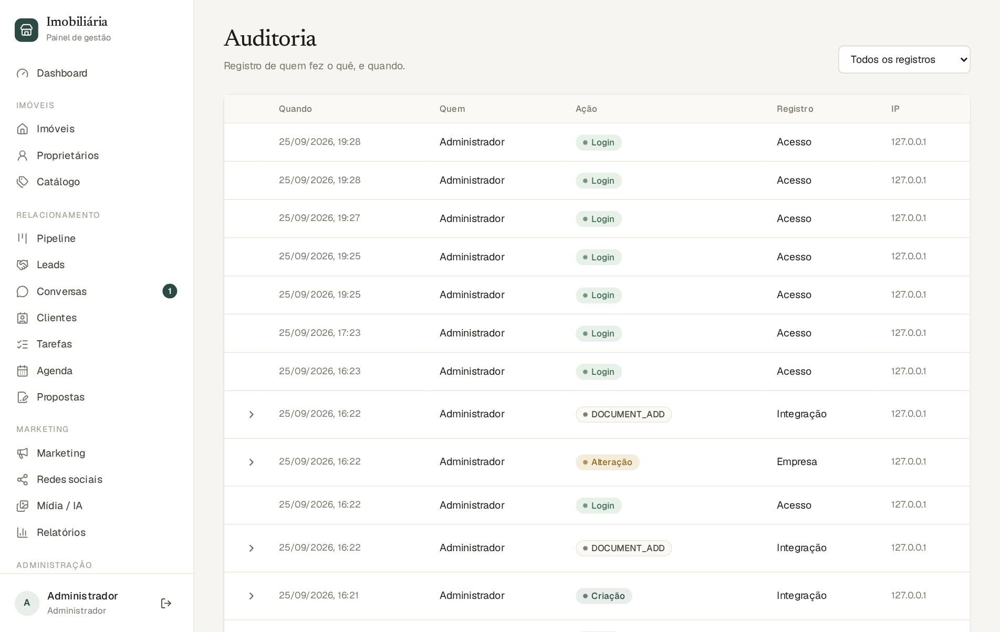

Este capítulo é para quem administra o sistema (perfil Administrador; o Gerente também gerencia usuários). As telas ficam no grupo Administração do menu.
13.1 Usuários

Lista de usuários.
Criando um usuário
Em Administração → Usuários, clique em Novo usuário.
Preencha nome, e-mail (será o login), telefone, papel (perfil), filial e CRECI (para corretores).
Defina uma senha inicial (mínimo de 10 caracteres) e repasse à pessoa por um canal seguro. Ela pode trocá-la pelo “Esqueci minha senha”.
Salve.
Editar: altere dados e papel (é assim que se muda o que a pessoa pode fazer). Para redefinir a senha, preencha Nova senha (em branco mantém a atual).
Desativar: a pessoa perde o acesso imediatamente, mas o histórico dela (leads, tarefas, registros) é mantido. Nunca apague um usuário que saiu da empresa: desative.
Corretor novo?Crie o usuário com o papel Corretor. Se a empresa usa rodízio de leads, ele passa a receber leads automaticamente assim que estiver ativo.
13.2 Permissões
Em Administração → Permissões você consulta, em uma matriz, o que cada papel pode fazer no sistema, organizado por área (imóveis, mídia, leads, funil, visitas, propostas, marketing e administração). Um ✔ significa que o papel tem a permissão. Abaixo do nome de cada papel aparece quantos usuários o têm.

Matriz de permissões por papel (consulta).
Como mudar o acesso de alguémA forma normal é trocar o papel da pessoa em Usuários → Editar. Os cinco papéis padrão cobrem a maior parte das imobiliárias. Se a sua operação precisa de um perfil diferente (por exemplo, um corretor que também publica imóveis), peça o ajuste à equipe técnica que mantém o sistema.
13.3 Empresa e filiais
Em Administração → Empresa e filiais há cinco abas:
Aba
Conteúdo
Empresa
Razão social, nome fantasia, CNPJ, CRECI, e-mail, site, telefone, WhatsApp, cores primária e secundária e a distribuição de leads (veja abaixo). Esses dados aparecem no site.
Filiais
Unidades de atendimento: nome, contatos, endereço e situação (ativa ou não). Depois, escolha a filial na ficha de imóveis e usuários.
Alertas e automações
Prazos dos alertas e liga/desliga das tarefas automáticas (seção 12.2).
Imagens e IA
Contas de IA, modelos padrão, limite mensal e marca d’água com a logo (capítulo 5).
Agente de atendimento
Configuração, documentos, teste e atividade do agente de IA (capítulo 10).

Aba “Empresa”.
Distribuição de leads
Define como um lead novo escolhe o corretor quando o imóvel não tem responsável definido:
Manual: o lead fica sem responsável até alguém atribuir (o perfil Atendimento costuma fazer isso).
Rodízio entre corretores: o corretor que está há mais tempo sem receber lead é o próximo. Distribui de forma justa.
Se o imóvel tem corretor responsável (e ele é corretor), o lead vai para ele, seja qual for a regra.
A logo da empresa é enviada na aba Imagens e IA (marca d’água) e também é usada no site.
13.4 Integrações
Em Administração → Integrações ficam o WhatsApp (capítulo 9) e o Meta Pixel e Conversions API (capítulo 11). Cada cartão mostra se está Conectado e permite testar e desconectar. Os segredos (tokens) são guardados criptografados e nunca aparecem de volta. As contas de IA e os aplicativos de redes sociais têm telas próprias (capítulos 5 e 11).
13.5 Auditoria
A auditoria é o “diário” do sistema: registra quem fez o quê e quando (logins, criação e edição de imóveis, mudança de etapa de leads, propostas, publicações, alterações de configuração…). Serve para tirar dúvidas (“quem mudou o preço?”), acompanhar a equipe e dar segurança.

Auditoria: registros com usuário, ação, item e data.
Filtre por tipo de registro (imóvel, lead, proposta, integração…).
Clique em uma linha para ver o antes e depois das alterações. Senhas e segredos nunca são gravados em claro.
Os registros não têm edição nem exclusão pelo painel.
Capítulo 14Rotina do dia a dia, por perfil
Um roteiro simples para cada função. Use como lista de conferência.
Corretor
Manhã: Dashboard → “Precisa de atenção”; Tarefas → aba “Hoje” e “Atrasadas”.
Responder leads novos e conversas do WhatsApp (Conversas).
Confirmar as visitas de amanhã (Agenda).
Depois de cada visita: marcar como realizada e registrar o retorno do cliente.
Atualizar as etapas no Pipeline e anotar o que ficou combinado.
Fim do dia: nenhuma tarefa atrasada; agendar o próximo passo de cada lead quente.
Manter os imóveis sob sua responsabilidade com fotos e valores atualizados.
Atendimento (recepção)
Acompanhar Conversas e os alertas de leads sem atendimento.
Cadastrar leads que chegam por telefone ou presencialmente (Novo lead).
Distribuir leads sem responsável (Leads → ficha → Responsável).
Agendar visitas e confirmar horários com os clientes.
Assumir conversas que o assistente transferiu e passar ao corretor certo.
Finalizar conversas concluídas.
Gerente
Dashboard e Relatórios (semanal): conversão, tempo até fechar, motivos de perda, desempenho da equipe.
Ver leads parados e propostas sem movimento; cobrar a equipe.
Aceitar, recusar e fechar propostas.
Conferir imóveis com poucas fotos (Mídia / IA).
Redistribuir leads quando necessário.
Marketing
Publicar imóveis novos no site e nas redes (com agendamento).
Melhorar as fotos com IA e aprovar as versões.
Acompanhar Marketing: quais campanhas trazem leads que avançam.
Conferir as Conversões enviadas à Meta.
Manter a marca d’água e as contas de redes sociais funcionando.
Administrador
Criar e desativar usuários; conferir o papel de cada um.
Manter integrações (WhatsApp, Meta) e contas de IA em dia.
Acompanhar o consumo de IA do mês.
Ajustar alertas e o agente de atendimento com base no que a operação mostra.
Consultar a Auditoria quando algo estranho acontecer.
Toda a equipe, todos os dias
Responder rápido: o primeiro contato define o negócio.
Anotar tudo no lead, não em papel.
Nunca deixar lead sem próximo passo.
Respeitar o horário e a vontade do cliente.
Capítulo 15Perguntas frequentes e solução de problemas
15.1 Dúvidas comuns
Não encontro um lead / imóvel / menu que deveria existir.
Quase sempre é permissão: corretores só veem os próprios leads, e cada perfil enxerga só alguns menus. Peça ao administrador para conferir o seu papel em Usuários e em Permissões.
Publiquei o imóvel, mas ele não aparece no site.
Veja a seção 6.3: precisa estar publicado, com status Disponível ou Reservado e com ao menos uma foto processada. Aguarde cerca de um minuto.
Não consigo publicar: o sistema pede informações.
O aviso diz o que falta (título, cidade, bairro, valor ou foto). Preencha e tente de novo.
A foto ficou “Processando…” ou “Falhou”.
Aguarde alguns segundos: fotos grandes demoram. Se falhar, clique em Tentar novamente; se persistir, exporte a foto de novo (JPG) e envie outra vez.
Não consigo enviar mensagem no WhatsApp: “janela de 24 horas fechada”.
Já passou de 24 horas desde a última mensagem do cliente. Envie um modelo aprovado (seção 9.2) e aguarde a resposta.
A mensagem do WhatsApp falhou.
Leia o motivo abaixo da mensagem e use Reenviar. Se todas falharem, peça ao administrador para clicar em Testar conexão em Integrações: o token pode ter expirado.
O assistente de IA não respondeu a um cliente.
Confira: (1) o agente está ativo? (2) a conversa está com Assistente IA (e não com “Atendimento humano”)? (3) a conversa não está finalizada? (4) o limite de respostas da conversa foi atingido? (5) o modelo de IA está com a chave válida e sem limite estourado? Veja também Atividade recente do agente: erros aparecem lá.
O assistente respondeu algo errado.
Assuma a conversa, corrija com o cliente e depois melhore as orientações e os documentos do agente. Use o teste do painel para confirmar a correção.
Uma edição por IA falhou ou foi recusada.
O provedor pode ter recusado o pedido (política de conteúdo), estar instável ou a chave/limite ter acabado. A mensagem explica; tente descrever de outra forma ou de novo em alguns minutos. Falhas não são cobradas nem contam no limite mensal.
Recebi “O limite mensal de edições por IA foi atingido”.
O administrador pode aumentar o limite em Empresa → Imagens e IA → Modelos padrão, ou usar o modo básico, que não conta.
A conta do Instagram/Facebook aparece como “Expirada”.
A Meta invalidou a autorização (troca de senha, remoção de permissão). Use Reconectar na linha da conta.
Não consigo entrar com o Facebook.
Confirme se existe um aplicativo da Meta cadastrado e se a URI de redirecionamento está igual à mostrada na tela. Com o app em modo de desenvolvimento, só quem tem função nele consegue entrar.
Esqueci a senha e o e-mail de recuperação não chega.
Verifique o spam. Se não chegar, peça ao administrador para definir uma nova senha em Usuários → Editar → Nova senha.
Cadastrei um lead duplicado.
Leads são ligados ao cliente pelo telefone. Ao cadastrar alguém que já existe, escolha o cliente existente em vez de criar outro. O administrador pode excluir um lead duplicado (com a permissão de excluir leads).
Apaguei algo sem querer.
Fotos e imóveis excluídos não voltam. Por isso o sistema pede confirmação e sugere arquivar em vez de excluir. Na dúvida, arquive.
15.2 Quando precisar de suporte
Ao pedir ajuda, informe: (1) o que você estava fazendo e em qual tela; (2) o texto exato da mensagem de erro; (3) o código de solicitação que aparece em erros inesperados; (4) o dia e a hora; e, se possível, (5) uma captura de tela. Isso acelera muito a solução. Nunca envie senhas, tokens ou chaves por mensagem.
Capítulo 16Boas práticas e privacidade (LGPD)
O sistema guarda dados pessoais de clientes (nome, telefone, e-mail, conversas). A Lei Geral de Proteção de Dados (LGPD) exige cuidado com esses dados. Este capítulo resume atitudes práticas; ele não substitui a orientação de um profissional jurídico.
16.1 No dia a dia
Use os dados só para o atendimento imobiliário: fale com quem pediu contato e sobre o assunto que interessa a essa pessoa.
Não compartilhe telefones, conversas ou dados de clientes e proprietários fora do trabalho.
Respeite pedidos de quem não quer mais ser contatado: registre no lead e não insista.
Proteja o seu acesso: senha própria e forte, sem compartilhar; saia do sistema em computadores de uso comum.
Quem saiu da empresa deve ter o usuário desativado no mesmo dia.
Valor mínimo de negociação e dados do proprietário são sigilosos: nunca informe ao cliente.
16.2 O que o sistema faz por você
O formulário do site exige o consentimento do visitante para contato.
O aviso de cookies controla o envio de dados de campanhas à Meta; sem aceite, nada é enviado, e os dados de contato vão criptografados (hash).
Segredos (tokens, senhas, chaves de IA) ficam criptografados e nunca aparecem de volta.
Cada empresa só enxerga os próprios dados, e cada corretor, os próprios leads (salvo permissão).
A auditoria registra quem fez cada alteração importante.
16.3 Sobre o uso de inteligência artificial
O agente de atendimento se identifica como assistente virtual e deixa fácil chamar uma pessoa.
Os trechos das conversas e dos imóveis enviados à IA vão ao provedor que você escolheu (OpenAI, Google, Anthropic ou Groq), sob os termos dele. Não coloque nos documentos do agente informações sigilosas.
Fotos editadas por IA são sinalizadas no site. Não use a IA para enganar o cliente sobre o estado real do imóvel.